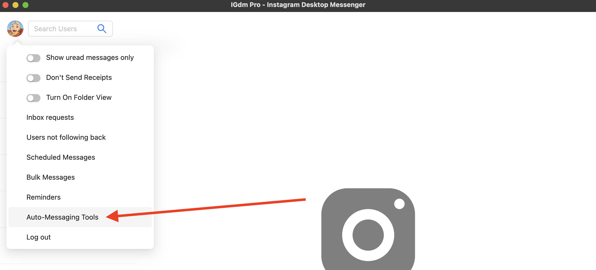
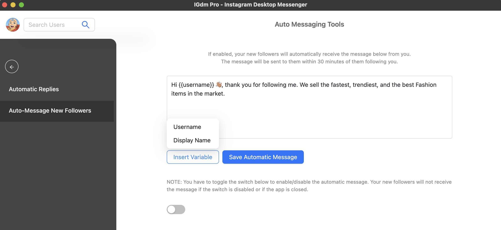
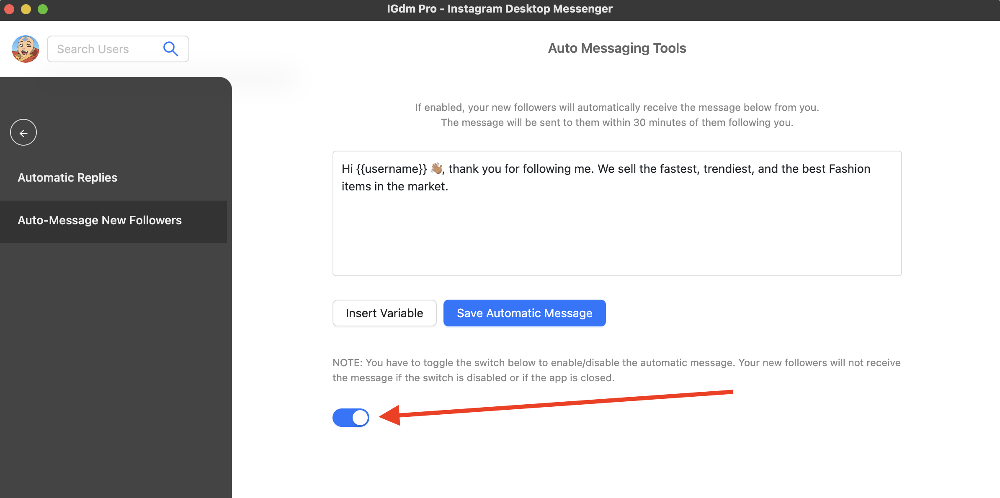

How To Automatically Send a Greeting Message to Your New Instagram Followers
Depending on the nature of business or marketing efforts you run on Instagram, you may have found the need
to send auotmated greeting messages to users that recently followed you. However, Instagram unfortunately
doesn't currently have support for this feature. In this article, we will walk through how you can enable
automated messages to your new Instagram followers using the IGdm Pro app.
Installing IGdm Pro
IGdm Pro is a handy application that has been designed to improve the effeciency of Instagram users who run businesses
with their accounts. The IGdm Pro app offers message scheduling, bulk message sending, auto-replies, quick replies,
and a host of other productivity boosting features.
To install the IGdm Pro app, simply visit the website (https://pro.igdm.me), and click
the download link that is applicable to your operating system. Once downloaded to your computer,
launch the application and complete the installation process.
Log In to Your Instagram Account
- Launch the IGdm Pro App
- Click on the button that says "Click to login with Browser". This will open instagram.com on the Chromium Browser

- Log into your desired Instagram Account via the Instagram page opened on the Chromium Browser.
- Once login is complete, the browser will be automatically closed and you can switch back to the IGdm Pro app as it loads up your account.
Compose and Enable Auto-Message For Your New Followers
- Move your mouse to hover on your profile picture located on the top left corner of the application (see screenshot below)
- A dropdown menu will appear with a list of actions that you can perform. Click on the "Auto-Messaging Tools" option.

- This will switch the App to the "Auto Message Tools" view.
- From the options on the Sidebar, click "Auto Message New Followers" (see screenshot below).
- A message box will appear where you can now begin to compose your message.
- To include personalised content (such as each follower's display name or username) into your message, hover on the "Insert Variables" button, and click the desired variable you want to include. When the messages are being sent to each new follower, IGdm Pro will replace the variables with the user's actual username or display name.
- Once you are done composing your message, click on the "Save Automatic Message" button save it.
- Note that your auto-message has not been enabled yet, it has only been saved at this point.

- To enable the auto-message which you composed in the previous steps, simply click the toggle switch as seen in the screenshot below. Your auto-message will be enabled for as long as the toggle switch is enabled. If you'd like to temporarily disable the auto-message, you can simply turn off the toggle switch and it will be disabled for that period.

Now that your auto-message is enabled, once your Instagram account gets new followers, they will receive the message within 30 minutes of following you.
NOTE: The auto-message feature will not work if your IGdm Pro app is not running. However, once you re-start the app, it will begin to work again.
IGdm Pro Intelligently Avoids Rate Limits
In order to avoid over-flooding Instagram's servers, IGdm Pro will ensure to send the auto-message to new followers within 30 minutes, but not instantly.
This approach ensures leaving breathing room for various new followers that it may need to send the message to in that period.
Conclusion
We hope you found this article useful, and are able to increase your follower engagement with this valuable feature provided by IGdm Pro.
Read Other Articles